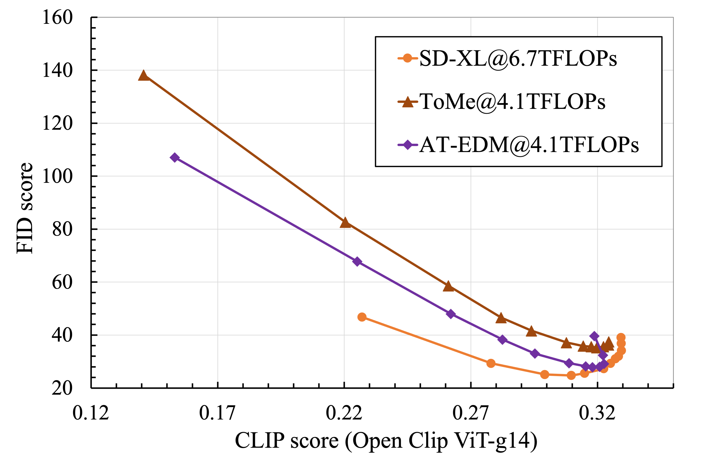

FID-CLIP Curves
The used CFG scales are [1.0, 1.5, 2.0, 2.5, 3.0, 4.0, 5.0, 6.0, 7.0, 9.0, 12.0, 15.0].
Diffusion models (DMs) have exhibited superior performance in generating high-quality and diverse images. However, this exceptional performance comes at the cost of expensive architectural design, particularly with the attention module heavily used in leading models. Existing works mainly adopt a retraining process to enhance the efficiency which is computational expensive and less scalable.
To this end, we introduce the Attention-driven Training-free Efficient Diffusion Model (AT-EDM), a framework that leverages attention maps to perform run-time pruning of redundant tokens during inference without retraining.
Specifically, we develop a single denoising step pruning strategy, Generalized Weighted Page Rank (G-WPR), to identify redundant tokens and a similarity-based recovery method to restore tokens for convolution operation. Additionally, the Denoising-Steps-Aware Pruning (DSAP) is proposed to adjust the pruning budget across different denoising timesteps for better generation quality.
Extensive evaluations show that AT-EDM performs favorably against prior arts in terms of efficiency (e.g., 38.8% FLOPs saving and up to 1.53\(\times\) speedup over Stable Diffusion XL) while maintaining nearly the same FID and CLIP scores with the full model.

Overview of our proposed efficiency enhancement framework AT-EDM. Single Denoising Step Token Pruning: (1) We get the attention map from self-attention; (2) We calculate the importance score for each token using G-WPR; (3) We generate pruning masks; (4) We apply the masks on tokens after the feed-forward network to realize token pruning; (5) We repeat Steps (1)-(4) for each consecutive attention layer; (6) Before passing feature maps to the ResNet block, we recover pruned tokens through similarity-based copy. Denoising-Steps-Aware Pruning Schedule (DSAP): In early steps, we propose to prune fewer tokens and to have less FLOPs reduction. In the latter steps, we prune more aggressively for higher speedup.
We report FID and CLIP scores of zero-shot image generation on the MS-COCO 2017 validation dataset.
The used CFG scales are [1.0, 1.5, 2.0, 2.5, 3.0, 4.0, 5.0, 6.0, 7.0, 9.0, 12.0, 15.0].
We generate all images with the CFG-scale of 7.0, except for SD-XL\(^\dagger\), for which we use the CFG-scale of 4.0.
Comparison between sampling latency in different cases. AT-EDM\(^\dagger\) does not deploying pruning at the second feature level while keeping other pruning rates the same as AT-EDM. Fused Operation (FO): libraries like xformers to boost attention computation. Current Implementation (CI): not provide attention maps as intermediate results. Desired Implementation (DI): provide attention maps as intermediate results.


Visual examples of SD-XL@6.7TFLOPs, ToMe@4.1TFLOPs, and AT-EDM@4.1TFLOPs.

Visual examples of ToMe and AT-EDM with various FLOPs budgets.

@article{wang2024atedm,
author = {Wang, Hongjie and Liu, Difan and Kang, Yan and Li, Yijun and Lin, Zhe and Jha, Niraj K. and Liu, Yuchen},
title = {Attention-Driven Training-Free Efficiency Enhancement of Diffusion Models},
journal = {arXiv preprint arXiv:2402.xxxxx},
year = {2024},
}